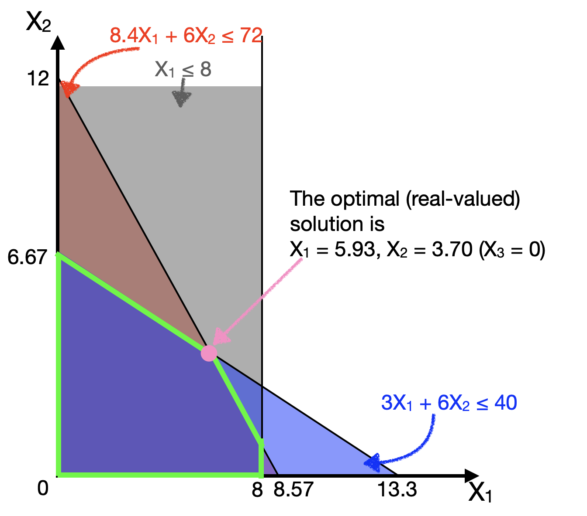
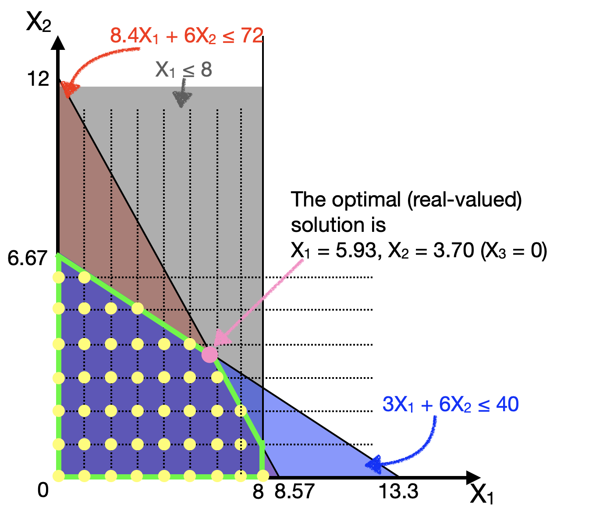
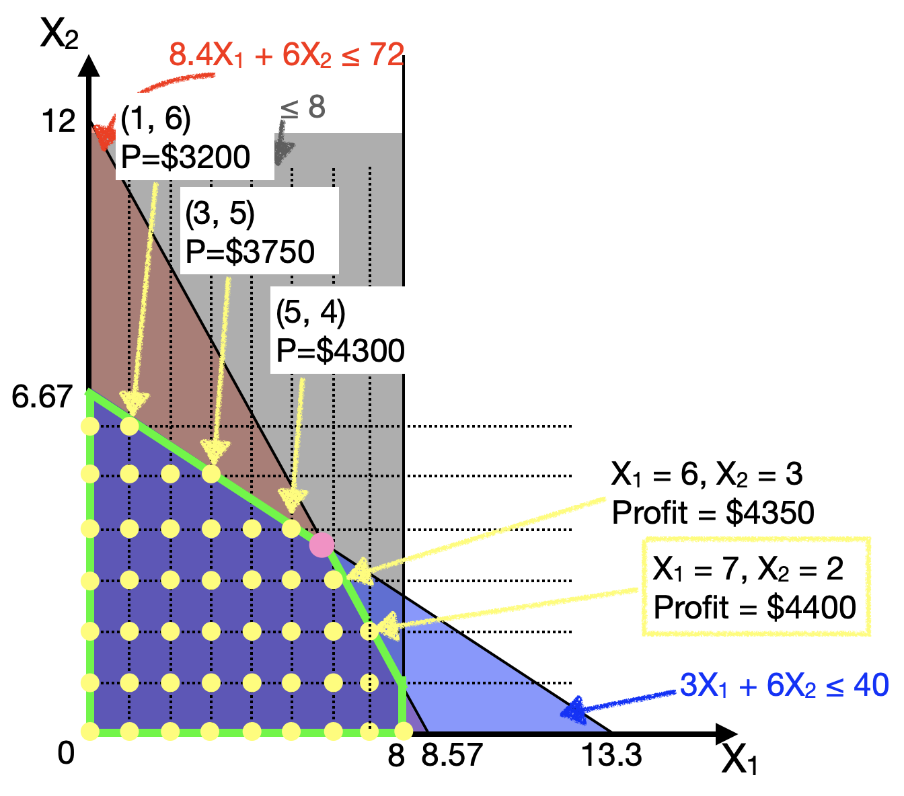

15.2 From real-valued to integer solutions
Let’s revisit the Furniture Factory example from the previous Chapter. Recall that the objective function, constraints, and solution are:
\[ X_1 = \text{number of tables made} \\ X_2 = \text{number of sofas made} \\ X_3 = \text{number of beds made} \\ \text{Maximize Profit} = 500 X_1 + 450 X_2 + 580 X_3 \]
Production Hour Budget Constraints: \[ 8.4X_1 + 6X_2 + 9.6X_3 \leq 72\] Storage Space Constraints: \[ 3X_1 + 6X_2 + 8X_3 \leq 40\]
Demand Constraints: \[ X_1 + \qquad + \qquad \leq 8\]
Non-negativity Constraints: \[ X_1 \geq 0; X_2 \geq 0; X_3 \geq 0 \]
And, the optimal solution is: \[X_1 = 5.93, X_2 = 3.70, X_3 = 0\] Let us ignore the beds (\(X_3\)) for just a second, and plot the 3 constraints onto \(X_1\) (tables) on the horizontal axis and \(X_2\) (sofas) on the vertical axis (in the plane \(X_3=0\)).

The optimal solution (\(X_1 = 5.93, X_2 = 3.70, X_3 = 0\)) is given in pink.
Now, if we want to impose an integer constraint, such that all our decision variables (\(X_1\), \(X_2\), \(X_3\)) must be integer valued, then our feasible solutions change. They cannot take on just any value, but only values indicated by the yellow dots below:

The first question that many people will ask is:
Well, can we just round off the real-valued answer to the nearest solution?
The answer is No, because in this case, the rounded off answer (\(X_1=6, X_2=4\)) is not a feasible solution (it lies outside the other constraints).
Then a natural response would be:
Can we then round down the answer, or round off the answer to the nearest feasible answer?
Maybe. But the nearest feasible answer is not guaranteed to be optimal! Have a look at the following plot, where the profit at several chosen yellow dots (near the constraint boundaries) are shown:

We can actually see that the nearest feasible answers (e.g., (5,4) and (6,3)) may not produce the optimal solution. In fact, the optimal solution in this plane (keeping \(X_3 = 0\)) is actually quite far away from (\(X_1 = 5.93\), \(X_2 = 3.70\)). It is (\(X_1 = 7\), \(X_2 = 2\))!
And actually if we do solve the integer-valued optimization problem (see below), we will eventually discover that the proper integer solution to this problem is
\[ X_1 = 6, X_2 = 2, X_3 = 1 \]
which has a profit of $4480. Recall that in the real-valued version of this problem, we concluded that beds were not profitable enough to make (optimal \(X_3=0\)). But adding the integer constraints may also change which constraints become binding, and which variables become relevant to the problem! Thus, suddenly the “not-so-profitable” Beds become profitable to make!
In reality, solving integer-constrained optimization problems is a hard problem. In fact, in computer science jargon, this is one of a class of NP-Complete problems, which just means there exists no efficient (polynomial-time) method to find solutions to this problem. (Unlike in the simple linear optimization case where such methods do exist). This means that one approach to get the optimal solution is to brute-force search through every solution (the time-complexity of which grows very rapidly with the problem size); another popular approach to use heuristics or approximation algorithms to offer a best-guess at an answer.
15.2.1 LP-Relaxation
We’ve seen that the optimal integer solution may not necessarily be near the optimal real-valued solution.
But that doesn’t mean the real-valued solution is useless. In fact, the most common way to solve the integer optimisation problem is to FIRST solve the problem without the integer constraints. Solving the optimisation without the integer constraints is called Linear Program [LP] Relaxation, because you “relax” the integer constraints.
Now, if you solve the LP relaxation, and the solution happens to be integer valued, then you can thank your lucky stars, because that solution is also the optimal solution to the integer problem.
- Think back to the example of Farmer Jean in the previous Chapter. In her case, the solution to her optimization problem was an integer number of plots of crops, (80, 120). Thus, even if we had to consider integer constraints, this solution is still valid. And in fact, it still remains optimal.
- Another collorary is that the objective of the optimal solution to the LP-relaxed problem (e.g., the maximum profit) is always better than or equal to the objective of the optimal integer-valued solution.
But this will not often be the case that the solution to the LP relaxation will be integer-valued. Then, programs use the real-valued solution as a starting point to systematically search for the optimal integer solution (such as the “branch and bound” algorithm used by lpSolve).
15.2.2 Specifying Integer Constraints
In order to tell lpSolve that we want to impose integer constraints, we simply add a new option int.vec = c(...), where we give a vector of integers. For example, if we want to specify in the furnitude example that \(X_1, X_2, X_3\) are all integers, we specify int.vec = c(1,2,3). (conversely, if only \(X_2\) was an integer, we would write int.vec=c(2).)
lp.solution <- lp("max", objective.fn, const.mat,
const.dir, const.rhs, int.vec = c(1,2,3),
compute.sens=FALSE)
# note: the sensitivity analysis calculated by lpSolve::lp()
# is inaccurate for integer-valued problems, so we won't use them.And that’s it. We can use the same functions lp.solution and lp.solution$solution to read out the optimal objective function value and the optimal values of the decision variables. Thus, for the furniture example above, we have:
objective.fn <- c(500, 450, 580)
const.mat <- matrix(c(8.4, 6, 9.6,
3, 6, 8,
1, 0, 0),
ncol=3 , byrow=TRUE)
const.dir <- c("<=", "<=", "<=")
const.rhs <- c(72, 40, 8)
# solving model
lp.solution <- lp("max", objective.fn, const.mat,
const.dir, const.rhs, int.vec = c(1,2,3),
compute.sens=FALSE)
# to print out the optimal objective function value
lp.solution## Success: the objective function is 4480## [1] 6 2 1Lastly, one final point to note is that the sensitivity analyses calculated by lpSolve may not be accurate for integer-valued problems (i.e., the effect of varying the objective function coefficients and shadow prices may not be accurate), so we choose not to have complete.sens in the function call. Of course, since we are already experts in this from last Chapter, we could always change the objective function coefficients or constraint values manually and try to solve it to estimate a sensitivity analysis, but the inbuilt convenience function doesn’t do that for us.